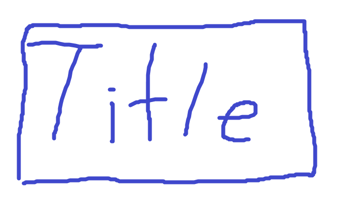

<!--
  Generated template for the Tab3Page page.

  See http://ionicframework.com/docs/components/#navigation for more info on
  Ionic pages and navigation.
-->

<ion-header>
  <ion-toolbar>
    <ion-title>내 정보</ion-title>
    <ion-buttons end>
      <button ion-button icon-only (click)="signOut()">
        <ion-icon name="more"></ion-icon>
      </button>
    </ion-buttons>
  </ion-toolbar>
</ion-header>

<ion-content>
  <div id="user" *ngIf="(user | async) as user; else auth">
    <ion-grid>
      <ion-row>
        <ion-col col-2>
          
        </ion-col>
        <ion-col col-10>
          {{user.displayName}}
        </ion-col>
      </ion-row>
    </ion-grid>
  </div>

  <ng-template #auth>
    <div>
      
      <ion-list>
        <ion-item>
          <ion-icon name='mail' item-start></ion-icon>
          <button ion-button full (click)='openLoginPage("email")'>이메일로 시작하기</button>
        </ion-item>
        <ion-item>
          <ion-icon name='logo-google' item-start></ion-icon>
          <button ion-button full (click)='openLoginPage("google")'>구글 계정으로 시작하기</button>
        </ion-item>
        <ion-item>
          <ion-icon name='logo-facebook' item-start></ion-icon>
          <button ion-button full (click)='openLoginPage("facebook")'>페이스북 계정으로 시작하기</button>
        </ion-item>
      </ion-list>
    </div>
  </ng-template>
</ion-content>